⚔️ Last War — Guide VS / Duel d’Alliance V2.8
La Bûcherie — mini-site HTML : navigation latérale, planning prioritaire, barème, stockage, dons d’alliance, optimisation et galerie des fiches quotidiennes.
📑 Sommaire FR
Navigation rapide vers les grandes parties du guide.
📅 Planning hebdomadaire
| Jour | Thème | Points victoire | Focus |
|---|---|---|---|
| Jour 1 | Entraînement Radar | 1 | Radars, endurance, drone, récoltes |
| Jour 2 | Expansion de Base | 2 | Construction, bâtiments, camions UR, tâches secrètes UR, survivants |
| Jour 3 | Ère de la Science | 2 | Recherche, badges, radars, composants drone |
| Jour 4 | Former des Héros | 2 | EXP, recrutements, fragments, médailles |
| Jour 5 | Mobilisation Totale | 2 | Formation, promotions, accélérateurs, radars |
| Jour 6 | Chasse à l’Ennemi | 4 | Combat, soins, unités tuées/perdues, actions UR |
🤝 Dons alliance : TOUS LES JOURS. C’est une routine.
🧠 Règle courte : stocker la veille, valider le bon jour, ne pas cliquer sur les points rouges trop tôt, faire les dons d’alliance TOUS LES JOURS, et aucun pillage sur 2245.
🖼️ Galerie — Récap VS quotidien version 1
Une image par jour pour partager rapidement les consignes dans l’alliance.
Clique sur le titre d’un jour pour afficher ou masquer son image. Sur mobile, cela évite une page trop longue.
🌙 Dimanche — Préparation de la semaine
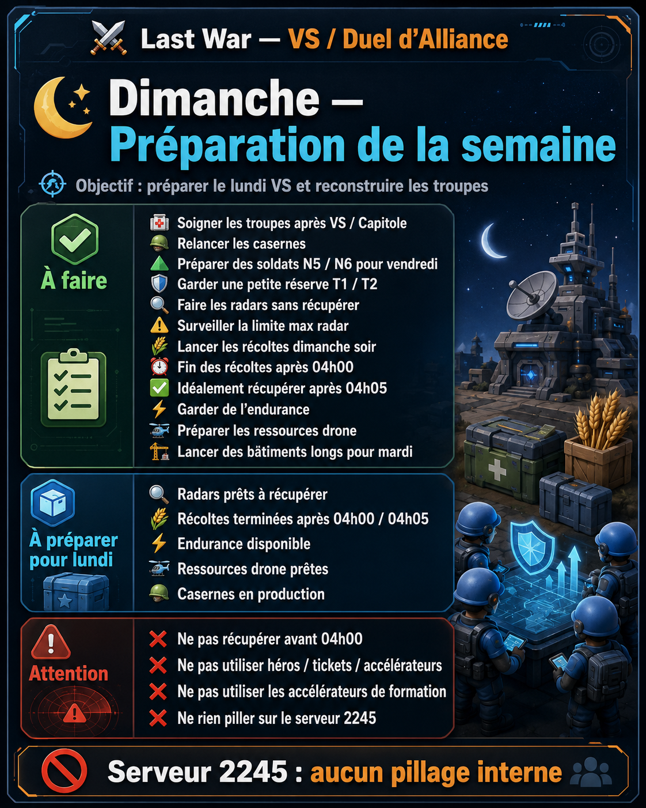
Préparer le lundi VS et reconstruire les troupes
🛰️ Lundi — Radar / Drone / Endurance
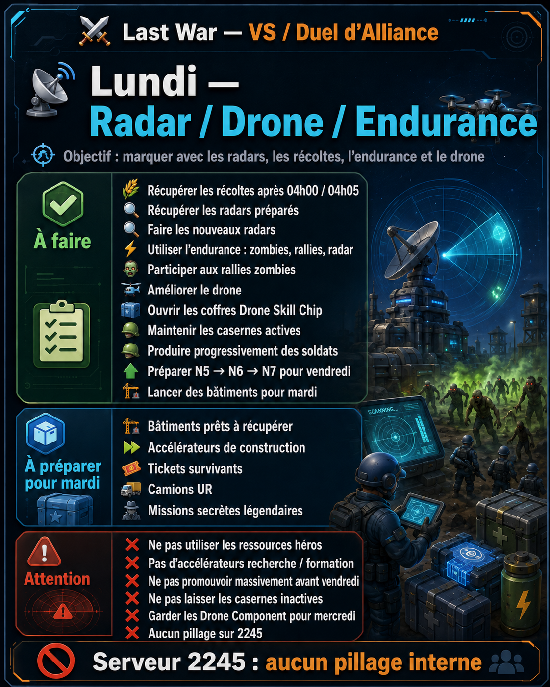
Marquer avec les radars, les récoltes, l’endurance et le drone
🏗️ Mardi — Expansion de base / Construction
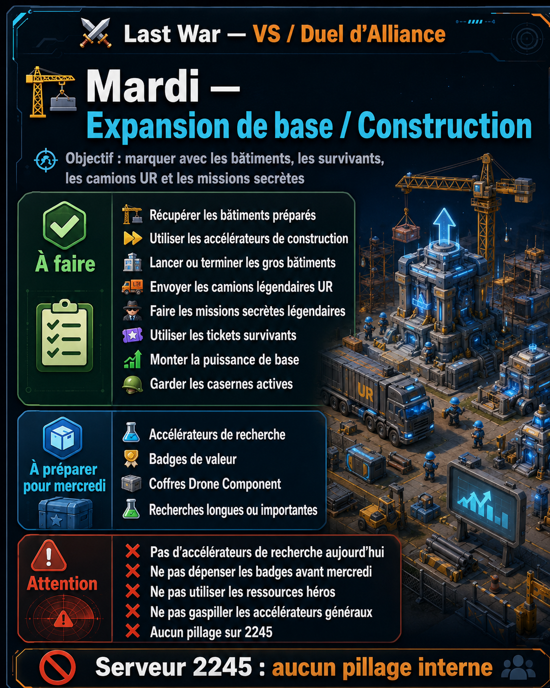
Marquer avec les bâtiments, les survivants, les camions UR et les missions secrètes
🔬 Mercredi — Recherche / Science
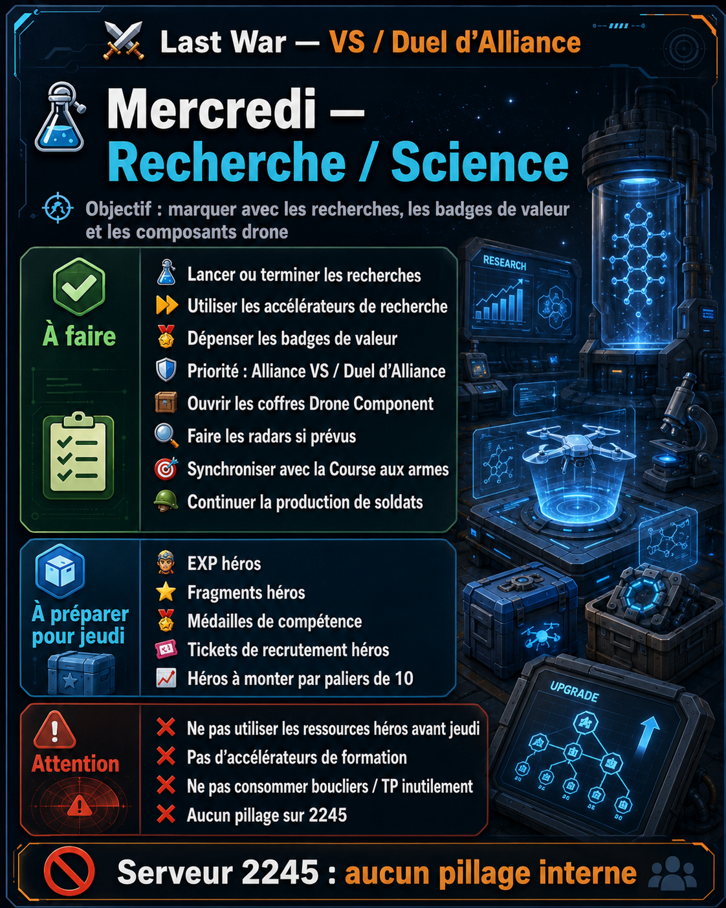
Marquer avec les recherches, les badges de valeur et les composants drone
🦸 Jeudi — Entraînement des héros
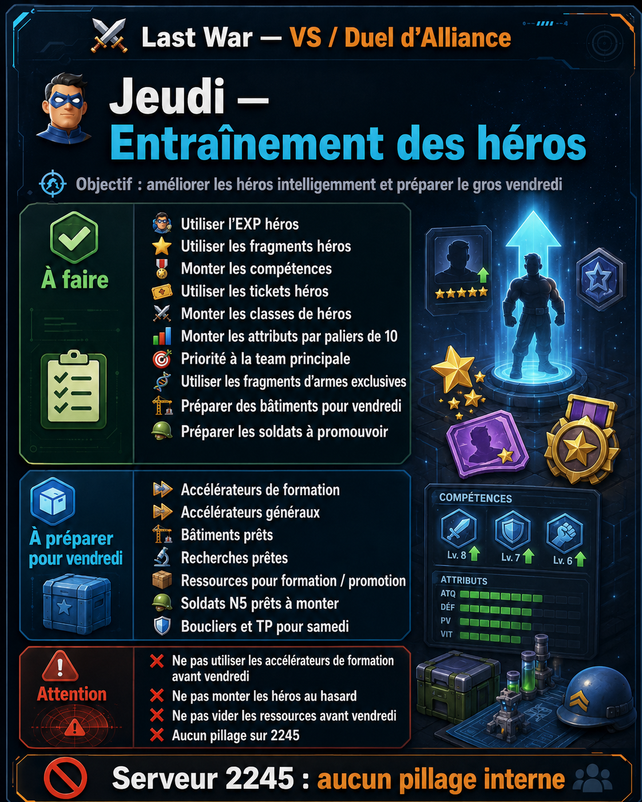
Améliorer les héros intelligemment et préparer le gros vendredi
🔥 Vendredi — Mobilisation totale
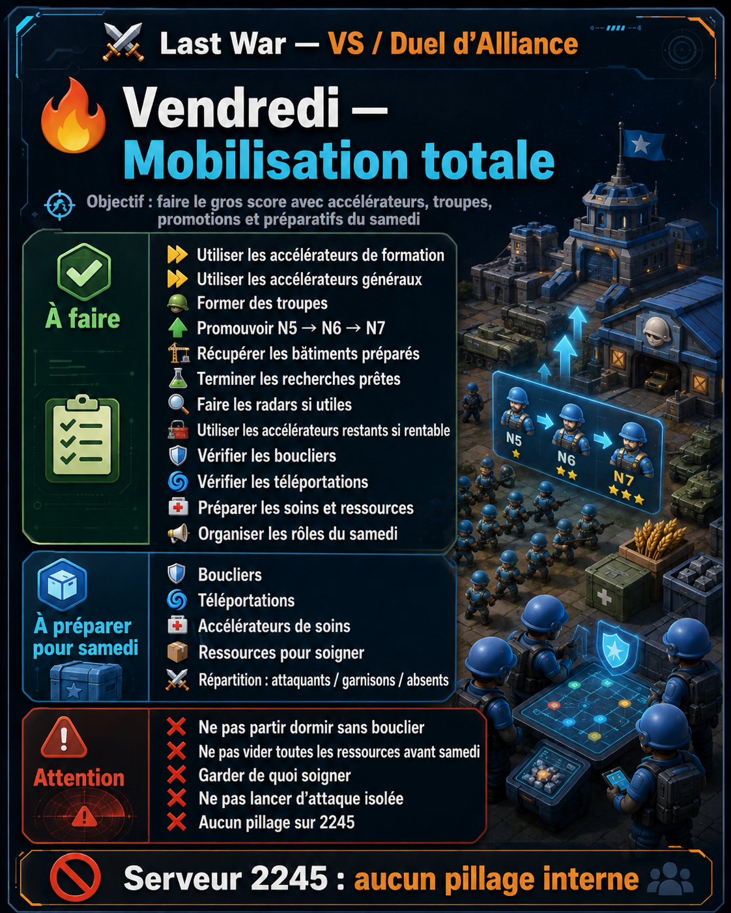
Faire le gros score avec accélérateurs, troupes, promotions et préparatifs du samedi
⚔️ Samedi — Enemy Buster / Chasse à l’ennemi
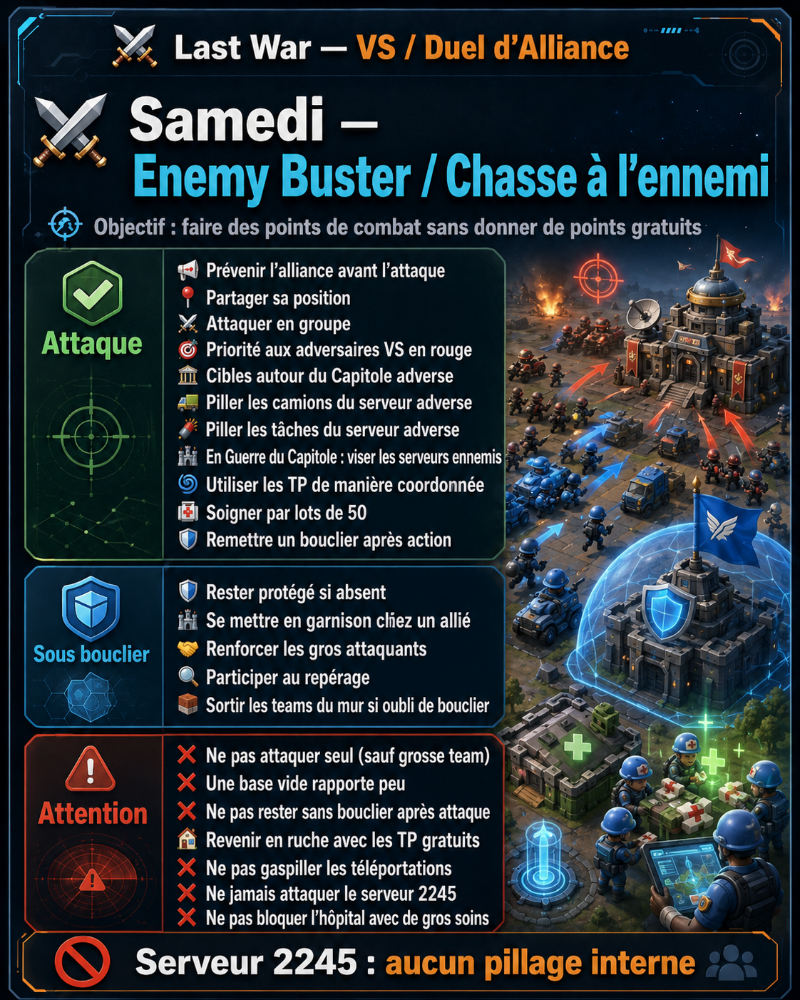
Faire des points de combat sans donner de points gratuits
🧠 Principes généraux
- Préparer les actions à l’avance, puis les valider le bon jour.
- Garder radars et récoltes pour les jours où ils rapportent.
- Garder constructions, recherches, héros, formations et soins pour le thème correspondant.
- Conserver les récompenses de bâtiments et les points rouges lorsque c’est possible.
- Faire les dons d’alliance TOUS LES JOURS pour accélérer les bonus collectifs.
- Soigner par petits blocs, environ 50 troupes, pendant les batailles.
- Construire une T1 forte avant de disperser les ressources sur T2/T3.
🪵 Trucs et astuces de bûcherons
Petites règles pratiques pour progresser plus vite, mieux marquer en VS et éviter les erreurs coûteuses.
⏳ 1. Stocker avant de cliquer
- Ne pas cliquer trop vite sur les points rouges.
- Terminer certaines actions la veille, puis récupérer le lendemain si le thème VS correspond.
- Garder les récompenses qui peuvent attendre : bâtiments, recherches, coffres, fragments, tickets.
🤝 2. Faire les dons d’alliance — TOUS LES JOURS
- Faire les dons TOUS LES JOURS pour débloquer les bonus collectifs.
- Prioriser les technologies utiles au VS, à la puissance et aux combats.
- Une alliance qui donne progresse plus vite et marque mieux.
🔍 3. Radars : préparer la veille
- Les radars sont importants les jours où Compléter 1 tâche Radar rapporte des points.
- Préparer surtout dimanche soir pour lundi, mardi soir pour mercredi et jeudi soir pour vendredi.
- Attention à la limite maximale de tâches radar.
🌾 4. Récoltes du lundi
- Lancer les récoltes dimanche soir.
- Les faire terminer après 04h00.
- Idéal : récupérer après 04h05 pour éviter les erreurs de comptabilisation.
🎁 5. Cadeaux bâtiments et récompenses
- Ne pas ouvrir automatiquement les cadeaux liés aux bâtiments.
- Les garder pour mardi ou vendredi si cela rapporte des points VS.
- Même logique pour les recherches, composants drone, héros et formations.
🪖 6. Soldats : production échelonnée
- Relancer les casernes dès dimanche pour reconstruire après VS / Capitole.
- Produire toute la semaine sans brûler les accélérateurs.
- Faire le gros push vendredi : formation + promotions N5 → N6 → N7.
🦸 7. Héros : paliers de 10
- Ne pas monter les héros au hasard.
- Viser les paliers utiles : 10 / 20 / 30 / 40.
- Priorité à la team principale et aux héros utilisés tous les jours.
🧬 8. Teams : T1 d’abord
- Une T1 forte vaut mieux que trois teams moyennes.
- Défenseurs devant, attaquants et supports derrière.
- Équipement : armure/radar sur frontline, canon/puce sur backline.
🛡️ 9. Bouclier avant Enemy Buster
- Vendredi soir : bouclier avant de dormir.
- Couvrir au minimum jusqu’après 04h00 / 04h05.
- Pour les absents : bouclier jusqu’au samedi soir.
🏥 10. Soins par petits blocs
- Soigner par lots d’environ 50 troupes.
- Demander l’aide alliance, relancer, recommencer.
- Évite de bloquer l’hôpital pendant les combats.
🧱 11. En cas d’oubli de bouclier
- Sortir les teams du mur de défense.
- Objectif : limiter les pertes de soldats.
- L’ennemi marque moins, la base devient moins rentable à attaquer.
🕵️ 12. Attaque furtive mine en mine
- Approcher discrètement en avançant de mine en mine ou de point proche.
- Frapper au dernier moment sur une cible rentable.
- Revenir sous bouclier ou en ruche immédiatement après.
🕵️ 13. Espionnage & bonus de frénésie
- Avant une attaque, espionner une mine ou une autre base pour déclencher / profiter du bonus de frénésie.
- Cette logique peut aussi servir pendant les exercices de Maréchal ou certains événements similaires.
- Ensuite : frapper vite, puis se remettre sous bouclier dès que possible.
🚫 14. Règle serveur 2245
- Sur 2245 : ne rien piller.
- Pas de camions, tâches, récoltes, bases ou ressources.
- Les cibles sont les adversaires VS ou les serveurs ennemis.
🏠 15. Retour en ruche
- Après une attaque, ne pas rester exposé.
- Profiter des TP gratuits du VS pour revenir proprement.
- Se remettre sous bouclier après l’action dès que possible, idéalement à la fin de la frénésie d’attaque.
📢 16. Communication alliance
- Prévenir avant les attaques.
- Partager sa position sur le serveur adverse.
- Coordonner attaquants, garnisons, repérage et absents.
🧠 17. Règle bûcheronne finale
- Préparer la veille.
- Valider au bon jour.
- Ne pas gaspiller.
- Ne pas donner de points gratuits.
🤝🎁 Dons d’alliance & stockage des récompenses
🤝 Dons d’alliance — TOUS LES JOURS
- Faire les dons TOUS LES JOURS.
- Prioriser les technologies utiles au VS et à la puissance d’alliance.
- Les dons donnent des avantages collectifs et facilitent la progression.
🎁 Récompenses / cadeaux
- Ne pas ouvrir systématiquement les cadeaux de bâtiments.
- Stocker si possible pour le jour construction ou mobilisation.
- Ouvrir au moment où le thème VS donne des points.
🔴 Points rouges
- Réaliser certaines tâches la veille si possible.
- Ne pas cliquer sur le point rouge avant le bon jour.
- Exemple : radars stockés dimanche soir, mardi soir et jeudi soir.
🗓️ Fiches détaillées par jour
Objectif : Préparer le lundi VS et reconstruire les troupes
✅ À faire
- Soigner les troupes après VS / Capitole
- Relancer les casernes
- Préparer des soldats N5 / N6 pour vendredi
- Garder une petite réserve T1 / T2
- Faire les radars sans récupérer
- Surveiller la limite maximale de radars
- Lancer les récoltes dimanche soir
- Fin des récoltes après 04h00 ; idéalement récupérer après 04h05
- Garder de l’endurance
- Préparer les ressources drone
- Lancer des bâtiments longs pour mardi
- Faire les dons d’alliance TOUS LES JOURS
- Stocker les cadeaux/récompenses bâtiments si possible
📦 À préparer
- Radars prêts à récupérer
- Récoltes après 04h00 / 04h05
- Endurance disponible
- Ressources drone prêtes
- Casernes en production
⚠️ Attention
- Ne pas récupérer avant 04h00
- Ne pas cliquer sur les points rouges avant le bon jour
- Ne pas utiliser héros / tickets / accélérateurs
- Aucun pillage sur 2245
📊 Barème à préparer pour lundi — Jour 1
Dimanche sert surtout à préparer les actions du lundi : radars non récupérés, récoltes après 04h00 / 04h05, endurance et ressources drone.
| Tâche qui rapporte des points | Points |
|---|---|
| Utiliser 1 endurance | 300 |
| Compléter 1 tâche Radar | 23 000 |
| Utiliser 660 EXP de héros | 2 |
| Utiliser 1 point de données de combat du drone | 6 |
| Utiliser 1 pièce de drone | 5 000 |
| Collectes hors Radar | 40 |
| Coffre de puce : matériel premium | 2 250 |
Objectif : Marquer avec les radars, les récoltes, l’endurance et le drone
✅ À faire
- Récupérer les récoltes après 04h00 / 04h05
- Récupérer les radars préparés
- Faire les nouveaux radars
- Utiliser l’endurance : zombies, rallies, radar
- Participer aux rallies zombies
- Améliorer le drone
- Ouvrir les coffres Drone Skill Chip si comptabilisés
- Maintenir les casernes actives
- Produire progressivement des soldats
- Préparer N5 → N6 → N7 pour vendredi
- Lancer des bâtiments pour mardi
- Faire les dons d’alliance TOUS LES JOURS
📦 À préparer
- Bâtiments prêts à récupérer
- Accélérateurs de construction
- Tickets survivants
- Camions UR
- Missions secrètes légendaires
⚠️ Attention
- Ne pas utiliser les ressources héros
- Pas d’accélérateurs recherche / formation
- Ne pas promouvoir massivement avant vendredi
- Garder les Drone Component pour mercredi
- Aucun pillage sur 2245
📊 Barème VS — Jour 1 : Entraînement Radar
| Tâche qui rapporte des points | Points |
|---|---|
| Utiliser 1 endurance | 300 |
| Compléter 1 tâche Radar | 23 000 |
| Utiliser 660 EXP de héros | 2 |
| Utiliser 1 point de données de combat du drone | 6 |
| Utiliser 1 pièce de drone | 5 000 |
| Collecter 100 nourriture / 100 fer / 60 pièces hors Radar | 40 |
| Ouvrir 1 coffre de puce et gagner 1 matériel premium | 2 250 |
Objectif : Marquer avec les bâtiments, les survivants, les camions UR et les missions secrètes
✅ À faire
- Récupérer les bâtiments préparés
- Utiliser les accélérateurs de construction
- Lancer ou terminer les gros bâtiments
- Envoyer les camions légendaires UR
- Faire les missions secrètes légendaires
- Utiliser les tickets survivants
- Monter la puissance de base
- Garder les casernes actives
- Ouvrir les cadeaux bâtiments stockés si cela compte
- Faire les dons d’alliance TOUS LES JOURS
📦 À préparer
- Accélérateurs de recherche
- Badges de valeur
- Coffres Drone Component
- Recherches longues ou importantes
- Radars à stocker mardi soir pour mercredi
⚠️ Attention
- Pas d’accélérateurs de recherche aujourd’hui
- Ne pas dépenser les badges avant mercredi
- Ne pas utiliser les ressources héros
- Ne pas gaspiller les accélérateurs généraux
- Aucun pillage sur 2245
📊 Barème VS — Jour 2 : Expansion de Base
| Tâche qui rapporte des points | Points |
|---|---|
| 1 min accélération construction | 115 |
| Puissance bâtiments +1 pt | 21,5 |
| Envoyer 1 camion commercial UR | 200 000 |
| Effectuer 1 tâche secrète UR | 150 000 |
| Recruter 1 survivant | 3 000 |
Objectif : Marquer avec les recherches, les badges de valeur et les composants drone
✅ À faire
- Lancer ou terminer les recherches
- Utiliser les accélérateurs de recherche
- Dépenser les badges de valeur
- Priorité : Alliance VS / Duel d’Alliance
- Ouvrir les coffres Drone Component
- Faire les radars si prévus
- Synchroniser avec la Course aux armes
- Continuer la production de soldats
- Ouvrir les récompenses/recherches stockées si cela compte
- Faire les dons d’alliance TOUS LES JOURS
📦 À préparer
- EXP héros
- Fragments héros
- Médailles de compétence
- Tickets de recrutement héros
- Héros à monter par paliers de 10
⚠️ Attention
- Ne pas utiliser les ressources héros avant jeudi
- Pas d’accélérateurs de formation
- Ne pas consommer boucliers / TP inutilement
- Aucun pillage sur 2245
📊 Barème VS — Jour 3 : Ère de la Science
| Tâche qui rapporte des points | Points |
|---|---|
| 1 min accélération recherche | 115 |
| Puissance technologique +1 pt | 21 |
| Utiliser 1 badge de valeur | 600 |
| Compléter 1 tâche Radar | 23 000 |
| Coffre composant drone niv.1 → niv.7 | 2 200 → 1 620 000 |
Objectif : Améliorer les héros intelligemment et préparer le gros vendredi
✅ À faire
- Utiliser l’EXP héros
- Utiliser les fragments héros
- Monter les compétences
- Utiliser les tickets héros
- Monter les classes de héros
- Monter les attributs par paliers de 10
- Priorité à la team principale
- Utiliser les fragments d’armes exclusives si comptabilisés
- Préparer des bâtiments pour vendredi
- Préparer les soldats à promouvoir
- Faire les dons d’alliance TOUS LES JOURS
📦 À préparer
- Accélérateurs de formation
- Accélérateurs généraux
- Bâtiments prêts
- Recherches prêtes
- Ressources pour formation / promotion
- Soldats N5 prêts à monter
- Boucliers et TP pour samedi
- Radars à stocker jeudi soir pour vendredi
⚠️ Attention
- Ne pas utiliser les accélérateurs de formation avant vendredi
- Ne pas monter les héros au hasard
- Ne pas vider les ressources avant vendredi
- Aucun pillage sur 2245
📊 Barème VS — Jour 4 : Former des Héros
| Tâche qui rapporte des points | Points |
|---|---|
| Effectuer 1 recrutement de héros | 3 450 |
| Utiliser 660 EXP de héros | 2 |
| Utiliser 1 fragment héros SR | 2 000 |
| Utiliser 1 fragment héros SSR | 7 000 |
| Utiliser 1 fragment héros UR | 20 000 |
| Consommer 1 médaille de compétence | 20 |
Objectif : Faire le gros score avec accélérateurs, troupes, promotions et préparatifs du samedi
✅ À faire
- Utiliser les accélérateurs de formation
- Utiliser les accélérateurs généraux
- Former des troupes
- Promouvoir N5 → N6 → N7
- Récupérer les bâtiments préparés
- Terminer les recherches prêtes
- Faire les radars si utiles
- Utiliser les accélérateurs restants si rentable
- Vérifier les boucliers
- Vérifier les téléportations
- Préparer les soins et ressources
- Organiser les rôles du samedi
- Faire les dons d’alliance TOUS LES JOURS
📦 À préparer
- Boucliers
- Téléportations
- Accélérateurs de soins
- Ressources pour soigner
- Répartition : attaquants / garnisons / absents
⚠️ Attention
- Ne pas partir dormir sans bouclier
- Ne pas vider toutes les ressources avant samedi
- Garder de quoi soigner
- Ne pas lancer d’attaque isolée
- Aucun pillage sur 2245
📊 Barème VS — Jour 5 : Mobilisation Totale
| Tâche qui rapporte des points | Points |
|---|---|
| Compléter 1 tâche Radar | 23 000 |
| 1 min accélération construction / recherche / formation | 115 |
| Puissance bâtiments +1 pt | 21,5 |
| Puissance technologique +1 pt | 21 |
| Former 1 unité niv.1 → niv.10 | 46 → 253 |
Objectif : Faire des points de combat sans donner de points gratuits
🕵️ Astuce attaque furtive — mine en mine
Le samedi, il est possible de jouer plus discret en déplaçant une team de mine en mine ou de point proche, puis de frapper l’ennemi au dernier moment. L’objectif est de réduire le temps d’exposition, surprendre la cible et limiter les représailles.
- Avancer progressivement vers la zone ennemie sans rester immobile trop longtemps.
- Garder un bouclier ou une téléportation de secours.
- Frapper uniquement une cible rentable et coordonnée.
- Espionner une mine ou une autre base avant de lancer l’attaque pour déclencher / profiter du bonus de frénésie. Astuce valable aussi pour les exercices de Maréchal et certains événements.
- Se remettre sous bouclier après l’action dès que possible, idéalement à la fin de la frénésie d’attaque, ou revenir en ruche.
✅ À faire
- Prévenir l’alliance avant l’attaque
- Partager sa position
- Attaquer en groupe
- Priorité aux adversaires VS en rouge
- Cibles autour du Capitole adverse
- Piller les camions du serveur adverse
- Piller les tâches du serveur adverse
- En Guerre du Capitole : viser les serveurs ennemis
- Utiliser les TP de manière coordonnée
- Soigner par lots de 50
- Se remettre sous bouclier après l’action dès que possible, idéalement à la fin de la frénésie d’attaque
- Garnison sous bouclier possible
- Sortir les teams du mur si oubli de bouclier
📦 À préparer
- Bouclier si absent
- Soins par petits blocs
- Retour en ruche avec TP gratuits
- Surveillance et renforts
⚠️ Attention
- Ne pas attaquer seul sauf grosse team
- Une base vide rapporte peu
- Ne pas rester sans bouclier après attaque
- Ne pas gaspiller les téléportations
- Ne jamais attaquer le serveur 2245
- Ne pas bloquer l’hôpital avec de gros soins
📊 Barème VS — Jour 6 : Chasse à l’Ennemi
Les points sont meilleurs sur les unités de l’alliance rivale : coordonner les cibles avec l’alliance.
| Tâche qui rapporte des points | Points |
|---|---|
| Envoyer 1 camion commercial UR | 200 000 |
| Effectuer 1 tâche secrète UR | 150 000 |
| 1 min accélération construction / recherche / formation / soin | 115 |
| Unité perdue niv.1 → niv.10 | 4 → 22 |
| Unité tuée niv.1 → niv.10 | 4,6 → 25,3 |
| Unité tuée dans l’alliance rivale niv.1 → niv.10 | 23 → 126,5 |
📊 Barème des points VS
Compilation issue des captures d’écran et de la fiche tâches quotidienne.
Jour 1 — Entraînement Radar
| Tâche | Points |
|---|---|
| Utiliser 1 endurance | 300 |
| Compléter 1 tâche Radar | 23 000 |
| Utiliser 660 EXP de héros | 2 |
| Utiliser 1 point de données de combat du drone | 6 |
| Utiliser 1 pièce de drone | 5 000 |
| Collecter 100 nourriture hors tâches Radar | 40 |
| Collecter 100 fer hors tâches Radar | 40 |
| Collecter 60 pièces hors tâches Radar | 40 |
| Ouvrir 1 coffre de puce et gagner 1 matériel de puce premium | 2 250 |
| Diamant obtenu lors de l’achat d’un pack | 30 |
Jour 2 — Expansion de Base
| Tâche | Points |
|---|---|
| 1 min accélération construction | 115 |
| Puissance bâtiments +1 pt | 21,5 |
| Envoyer 1 camion commercial UR | 200 000 |
| Effectuer 1 tâche secrète UR | 150 000 |
| Recruter 1 survivant | 3 000 |
| Diamant obtenu lors de l’achat d’un pack | 30 |
Jour 3 — Ère de la Science
| Tâche | Points |
|---|---|
| 1 min accélération recherche | 115 |
| Puissance technologique +1 pt | 21 |
| Utiliser 1 badge de valeur | 600 |
| Compléter 1 tâche Radar | 23 000 |
| Coffre composant drone niv.1 | 2 200 |
| Coffre composant drone niv.2 | 6 600 |
| Coffre composant drone niv.3 | 20 000 |
| Coffre composant drone niv.4 | 60 000 |
| Coffre composant drone niv.5 | 180 000 |
| Coffre composant drone niv.6 | 540 000 |
| Coffre composant drone niv.7 | 1 620 000 |
| Diamant obtenu lors de l’achat d’un pack | 30 |
Jour 4 — Former des Héros
| Tâche | Points |
|---|---|
| Effectuer 1 recrutement de héros | 3 450 |
| Utiliser 660 EXP de héros | 2 |
| Utiliser 1 fragment héros SR | 2 000 |
| Utiliser 1 fragment héros SSR | 7 000 |
| Utiliser 1 fragment héros UR | 20 000 |
| Consommer 1 médaille de compétence | 20 |
| Diamant obtenu lors de l’achat d’un pack | 30 |
Jour 5 — Mobilisation Totale
| Tâche | Points |
|---|---|
| Compléter 1 tâche Radar | 23 000 |
| 1 min accélération construction | 115 |
| Puissance bâtiments +1 pt | 21,5 |
| 1 min accélération recherche | 115 |
| Puissance technologique +1 pt | 21 |
| 1 min accélération formation | 115 |
| Former 1 unité Niv.1 | 46 |
| Former 1 unité Niv.2 | 69 |
| Former 1 unité Niv.3 | 92 |
| Former 1 unité Niv.4 | 115 |
| Former 1 unité Niv.5 | 138 |
| Former 1 unité Niv.6 | 161 |
| Former 1 unité Niv.7 | 184 |
| Former 1 unité Niv.8 | 207 |
| Former 1 unité Niv.9 | 230 |
| Former 1 unité Niv.10 | 253 |
| Diamant obtenu lors de l’achat d’un pack | 30 |
Jour 6 — Chasse à l’Ennemi — actions générales
| Tâche | Points |
|---|---|
| Envoyer 1 camion commercial UR | 200 000 |
| Effectuer 1 tâche secrète UR | 150 000 |
| 1 min accélération construction | 115 |
| 1 min accélération recherche | 115 |
| 1 min accélération formation | 115 |
| 1 min accélération soin | 115 |
| Diamant obtenu lors de l’achat d’un pack | 30 |
Jour 6 — Unités perdues
| Tâche | Points |
|---|---|
| Unité Niv.1 perdue | 4 |
| Unité Niv.2 perdue | 6 |
| Unité Niv.3 perdue | 8 |
| Unité Niv.4 perdue | 10 |
| Unité Niv.5 perdue | 12 |
| Unité Niv.6 perdue | 14 |
| Unité Niv.7 perdue | 16 |
| Unité Niv.8 perdue | 18 |
| Unité Niv.9 perdue | 20 |
| Unité Niv.10 perdue | 22 |
Jour 6 — Unités tuées
| Tâche | Points |
|---|---|
| Unité Niv.1 tuée | 4,6 |
| Unité Niv.2 tuée | 6,9 |
| Unité Niv.3 tuée | 9,2 |
| Unité Niv.4 tuée | 11,5 |
| Unité Niv.5 tuée | 13,8 |
| Unité Niv.6 tuée | 16,1 |
| Unité Niv.7 tuée | 18,4 |
| Unité Niv.8 tuée | 20,7 |
| Unité Niv.9 tuée | 23 |
| Unité Niv.10 tuée | 25,3 |
Jour 6 — Unités tuées dans l’alliance rivale
| Tâche | Points |
|---|---|
| Niv.1 dans alliance rivale | 23 |
| Niv.2 dans alliance rivale | 34,5 |
| Niv.3 dans alliance rivale | 46 |
| Niv.4 dans alliance rivale | 57,5 |
| Niv.5 dans alliance rivale | 69 |
| Niv.6 dans alliance rivale | 80,5 |
| Niv.7 dans alliance rivale | 92 |
| Niv.8 dans alliance rivale | 103,5 |
| Niv.9 dans alliance rivale | 115 |
| Niv.10 dans alliance rivale | 126,5 |
📸 Captures d’écran du jeu
Les captures sont repliées par titre pour faciliter la lecture. Ouvre uniquement celles que tu veux vérifier.
📸 Planning hebdomadaire VS
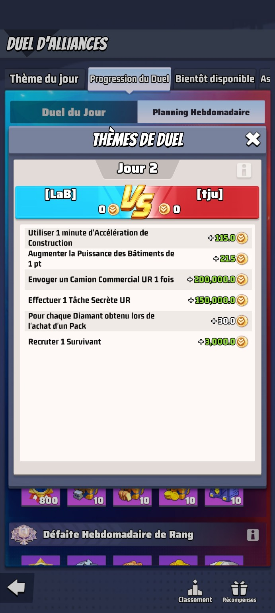
📸 Jour 2 — Expansion de Base
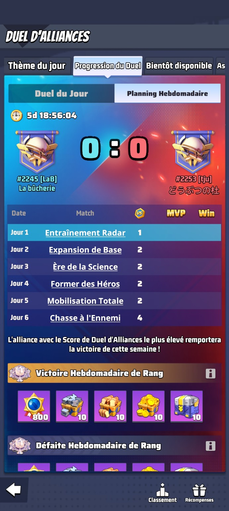
📸 Jour 3 — Ère de la Science
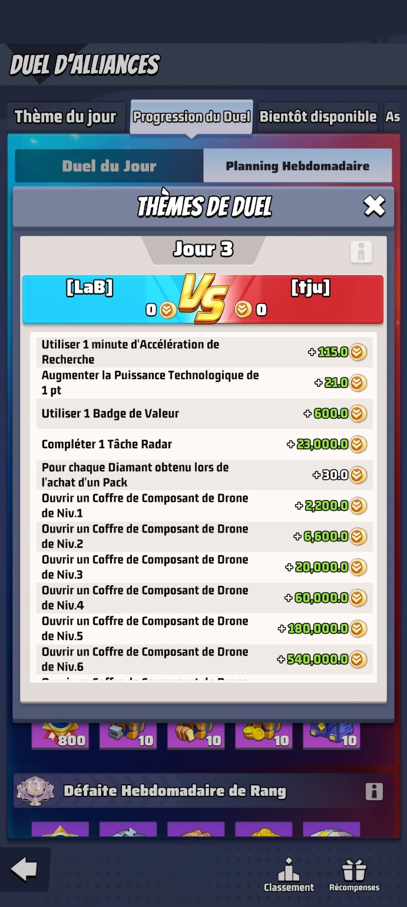
📸 Jour 4 — Former des Héros
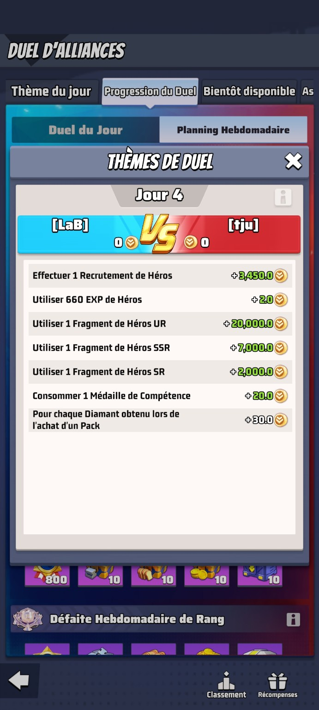
📸 Jour 5 — Formation / Mobilisation
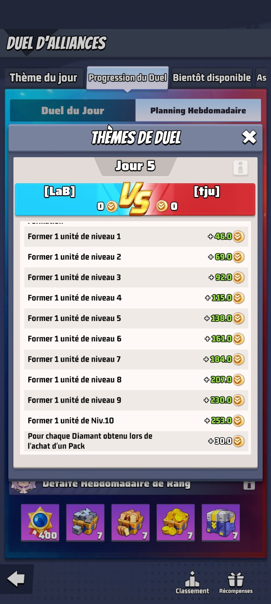
📸 Jour 5 — Mobilisation Totale
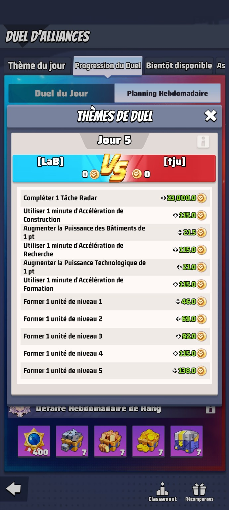
📸 Jour 6 — Accélérateurs / Combat
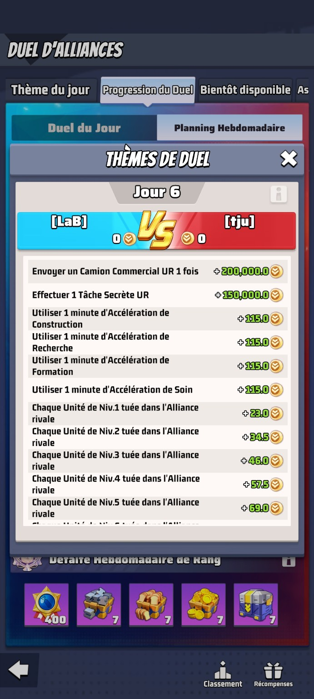
📸 Jour 6 — Unités tuées
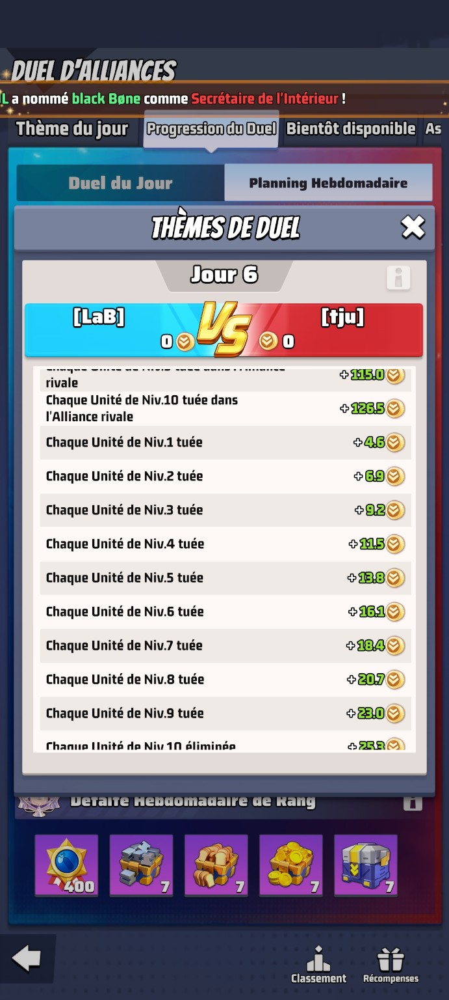
📸 Jour 6 — Unités perdues
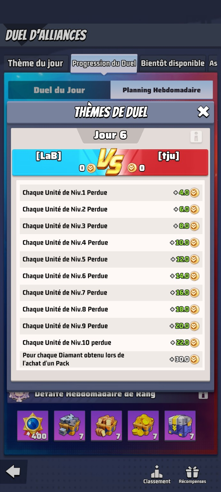
🧬 Guide stratégique — Optimisation des teams
T1 forte d’abord → T2 correcte ensuite → T3 plus tard.
🛡️ Frontline
- 2 héros devant.
- Défenseurs / tanks.
- Rôle : encaisser.
- Équipement : armure + radar.
🔥 Backline
- 3 héros derrière.
- Attaquants / supports.
- Rôle : dégâts et bonus.
- Équipement : canon + puce.
🧩 Bonus de type
| Composition | Bonus | Recommandation |
|---|---|---|
| 5 héros même type | +20 % | Objectif long terme |
| 4 + 1 | +15 % | Très bon compromis |
| 3 + 2 | +10 % | Bonne team mixte |
| 3 + 1 + 1 | +5 % | Temporaire |
| 2 + 2 + 1 | Faible | À éviter si possible |
⚙️ Priorités équipement
| Type | Priorité |
|---|---|
| Frontline | Armure 20 → Radar 20 → Radar 40 → étoiles radar → Armure 40 → étoiles armure |
| Backline | Canon 40 → étoiles canon → Puce 40 → étoiles puce → Radar/Armure ensuite |
| Ressources rares | Sur les héros principaux de T1 uniquement d’abord |
🚫 Serveur 2245 — Aucun pillage interne
Ne rien piller sur notre serveur : pas de camions, pas de tâches, pas de récoltes, pas de bases, pas de ressources. Les actions offensives visent les adversaires VS ou les serveurs ennemis.